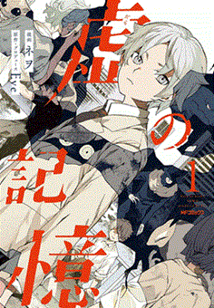

ここは関連動画のリンクを集めたページです。時間がある際にはぜひ視聴して下さい。

Eveがプロデュースを務める漫画です。ミュージックビデオに出てきたキャラクターが登場しています。私自身はまだ読んだことがないので、機会があれば読んでみたいです。
山口一郎氏のyoutubeチャンネルでは、雑談やゲーム配信、サカナクションのライブ映像を振り返って解説などを行っています。面白いのでぜひ興味のある人は視聴してみてください。